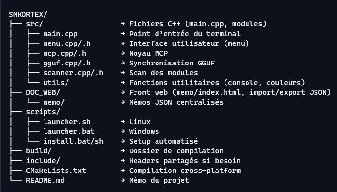

📝 Carnet personnel
🧠 Notes personnelles :
📁 Structure SMKORTEX :
📍 Avancement :
Launcher en construction — `main.cpp` initialisé ✅
Pages stylisées : rag, install, scripts, integration ✅
Modules en cours : connexion MCP + export GGUF ⏳
💡 Inspirations :
- Ajouter une animation de pulsation au démarrage
- Exporter l’état du shell en `.json` ou `.log`
- Créer une section de documentation collaborative
🔍 À vérifier :
- Interaction entre `rag-engine.sh` et `.env`
- Comportement de fine-tuning sur corpus long